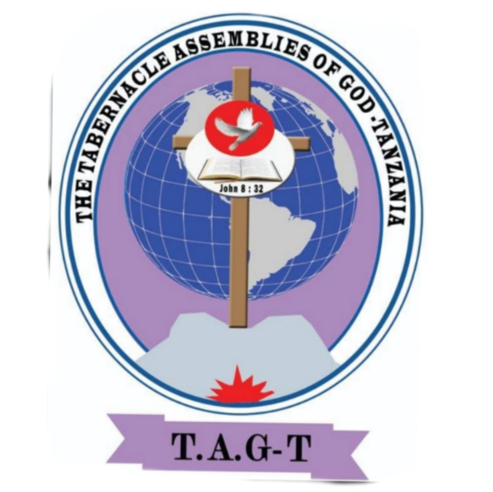

Karibu The Tabernacle Assemblies of God Tanzania (TAG-T)
 Kiswahili
Kiswahili
 English
Kiswahili
English
English
Kiswahili
English

"Kanisa lisilotafuta waliopotea, limepotea lenyewe."
Tunafurahi kukukaribisha kwenye familia ya waamini wanaosimama katika kweli ya Neno la Mungu. Lengo letu kuu ni kuhubiri kweli ya Kristo kwa watu wote. Tunaamini katika misingi 16 ya Kipentekoste, tukijikita katika kufanya huduma za kijamii na kiroho ili kuleta mabadiliko ya kweli katika maisha ya watu.
"Na itakuwa katika siku witnessed za mwisho, mlima wa nyumba ya BWANA utawekwa imara juu ya milima..."
Karibu sana The Tabernacle Assemblies of God Tanzania. Tunaamini Mungu ana mpango mzuri kwa maisha yako. Tunakuomba ujiunge nasi katika kuabudu, kujifunza Neno la Mungu na kumjua Yesu Kristo kwa undani zaidi.
Karibu Tuabudu Pamoja| Siku | Ratiba ya Siku |
|---|---|
| Jumatatu | Maombi | Saa 2:00 – 3:00 Usiku |
| Jumanne | Maombi | Saa 2:00 – 3:00 Usiku |
| Jumatano | Mafundisho ya Biblia | Saa 10:00 – 12:00 Jioni Maombi | Saa 2:00 – 3:00 Usiku |
| Alhamisi | Maombi | Saa 2:00 – 3:00 Usiku |
| Ijumaa | Ibada ya Jioni | Saa 10:00 – 12:00 Jioni Mkesha | Saa 3:00 – 6:00 Usiku |
| Jumamosi | Mazoezi ya Kwaya na Maandalizi ya Ibada |
| Jumapili | Ibada Kuu | Kuanzia Saa 2:00 Asubuhi na Kuendelea |
Fuata mafundisho yetu na ibada mubashara kupitia YouTube na mitandao yetu ya kijamii.
Tazama YouTube
Unaweza kuunga mkono huduma ya Mungu na upanuzi wa ufalme wake kupitia MPESA.
Jina la Akaunti: The Tabernacle Assemblies of God Tanzania
Namba: +255 725 484 632
Mungu akubariki kwa moyo wako wa utoaji.
+255 725 484 632
tagtairportmedia@gmail.com
Airport, Dar es Salaam